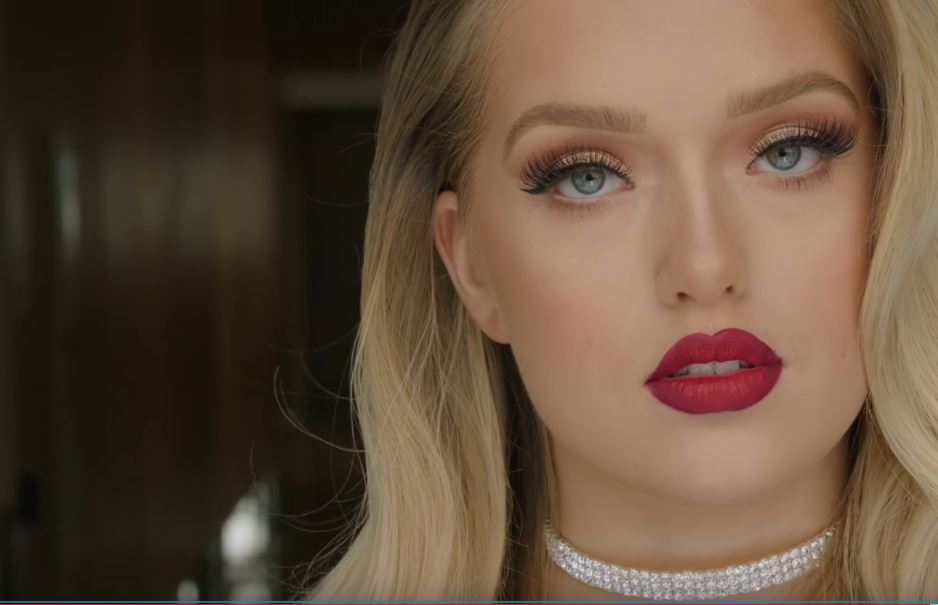
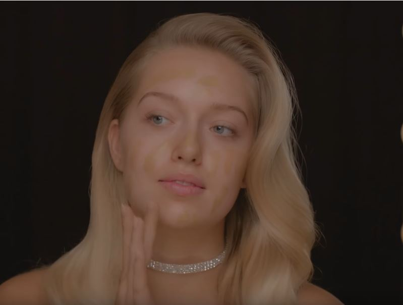
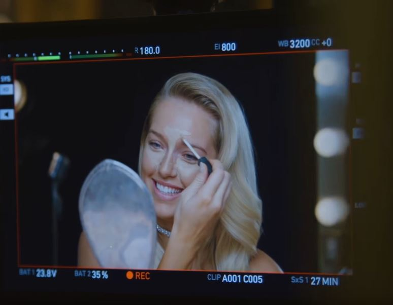
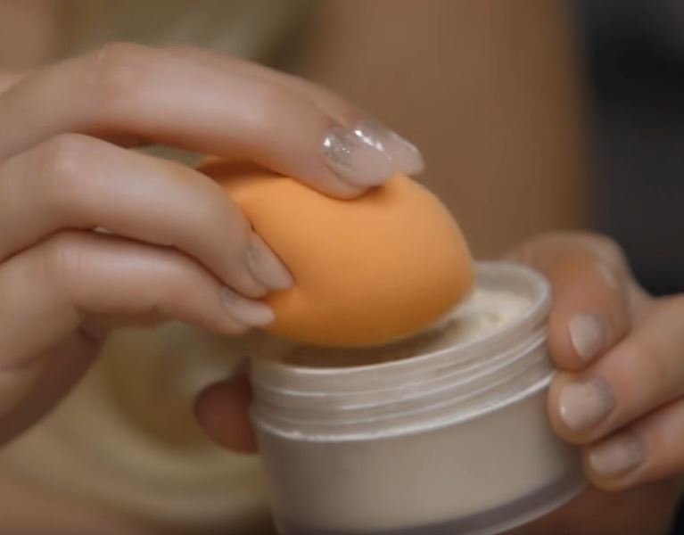
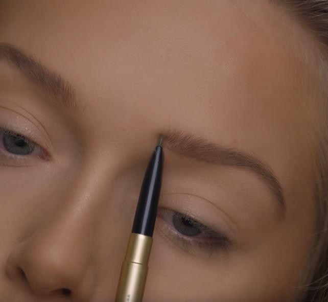
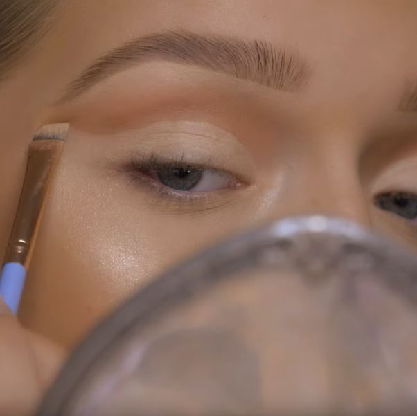
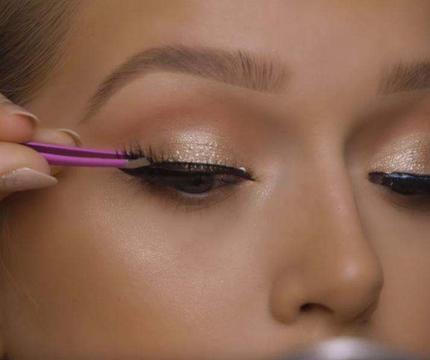
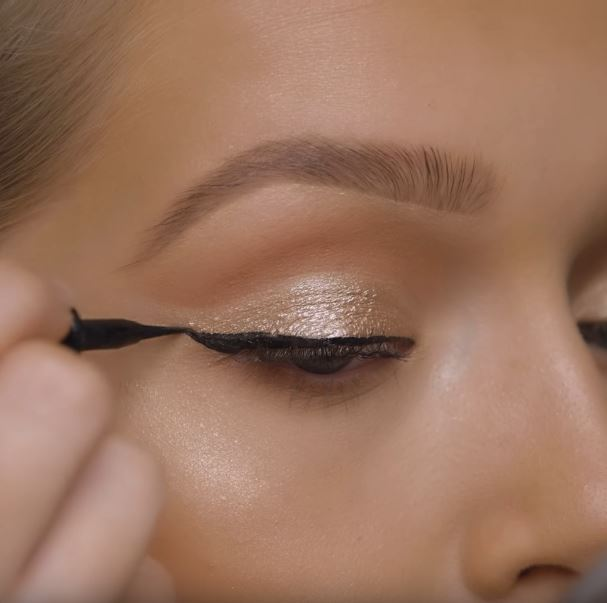
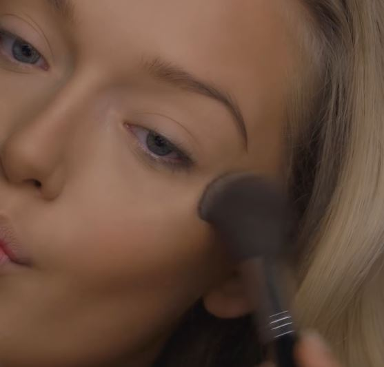
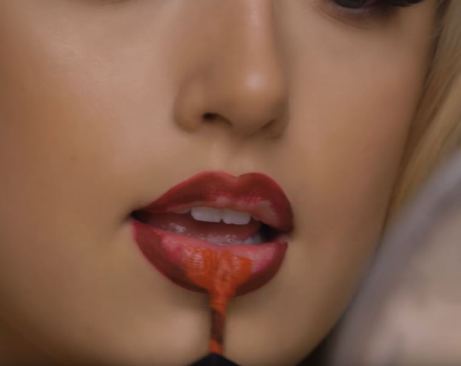

Time Traveling to 1950
Makeup

Achieve a Classic 1950s Retro Style
The key features of this makeup look are porcelain pale skin and softly defined lips and eyes with just a hint of color. You'll feel glamorous and made up while keeping a more natural look.
To create a perfect 1950s bridal look inspired by the popular brides of the era, such as Jackie Kennedy, Grace Kelly, or Debbie Reynolds, follow our step-by-step tutorial
You will need
 Smashbox Photo Finish Primer
Smashbox Photo Finish Primer
 Too Faced Foundation
Too Faced Foundation
 Radiant Creamy Concealer
Radiant Creamy Concealer
 Laura Mercier Setting Powder
Laura Mercier Setting Powder
 Smashbox Contouring Kit
Smashbox Contouring Kit
 Lash Blast Fusion Waterproof Mascara
Lash Blast Fusion Waterproof Mascara
 Artliner Precision Felt-Tip Liquid Eyeliner
Artliner Precision Felt-Tip Liquid Eyeliner
 Cherry Blossom 3D Silk Eyelashes
Cherry Blossom 3D Silk Eyelashes
 Glitter Glue Eye Shadow Primer
Glitter Glue Eye Shadow Primer
 Smashbox Miss Conduct Always On Liquid Lipstick
Smashbox Miss Conduct Always On Liquid Lipstick
 Smashbox Always On Liquid Lipstick, Baja Bound
Smashbox Always On Liquid Lipstick, Baja Bound
Base.
Prep your skin using a moisturizer and then a mattifying primer. This will give you a smooth base and flawless 50s skin and ensure your makeup stays put throughout the day.
Foundation.
Use a liquid foundation with medium to full coverage. Apply it in the center of your face and then blend it outwards, using a foundation brush or a beauty blender. Remember to apply it just a little at a time, as this technique will allow you to build it up if necessary, to even out your skin tone completely.
Conceal.
To cover up any imperfections and blemishes, use a concealer that is a tone lighter than your foundation and blend it using your fingers or a small fluffy brush.
Powder.
Set everything using a loose powder. Apply only a little bit of setting powder to avoid looking too cakey.
Eyebrows.
Fill in your eyebrows with light and feathery brushstrokes. Use a brow pencil or a darker eye shadow and follow your natural brow bone. Make an arch at the third of your brow instead of a rounded shape as it looks more natural.
Eye shadow.
Apply a lighter champagne color eye shadow all over your eyelids until the brows to even out any imperfections. Then take a light gray or brown shadow and apply it into your crease and outer corners to deepen out your eyes and contour. You can use another light shimmery shade and apply it on your inner corners. This will make your eyes look bigger and doe-like.
Don't be afraid to experiment and use neutral shades as the accent shouldn't be on your eyeshadow but the next steps, the eyelashes and liner. If you never played with eye shadows before, you can practice and see which shade best suits your eye color.
Lashes.
False lashes will give you that perfect almond eye shape and create fuller and natural-looking lashes. However, applying them can be tricky, so you should test them out before the big day. You can use a half lash or individual lashes and apply them to the outer corner of your eyes. Seal them in with one or two coats of black mascara.
If you're still insecure about fiddling with falsies, we would recommend doing semi-permanent eyelash extensions. Or you can skip this step altogether, and just use your lash curler and a mascara that will give your natural lashes more volume.
Eyeliner.
Use a black eye shadow or liquid eyeliner and create the iconic 50s cat-eye winged eye look. Follow your lash line and flick it out on the outside. To ensure your wings are symmetrical, you can use a piece of tape and stick it at the corners of your eyes. Some practice would come in handy with this step as well.
Blush.
Use a blush brush and apply a soft pink powder blush onto your cheekbones. Do this pretty lightly as blush wasn’t worn as prominently as it used to be before the 50s.
Lips.
If you want to, you can overdraw your lips using a red lip pencil to get a fuller lip, or just follow your natural lip line. Fill in your lips with the same pencil and then go over with a red-ish pink lipstick, which will give you a more raspberry feel. There's a wide array of different shades of red-ish pinks, and you can choose the one that best suits your skin tone.
Use a long-lasting lipstick or blot your lips on a piece of tissue after the first application and then re-apply it. This trick will give you a really intense color and ensure your lipstick lasts the whole day.
And that’s your 50s makeup look done!
